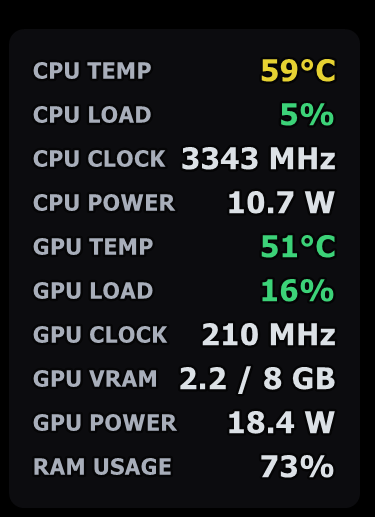
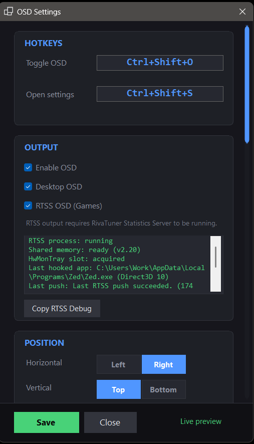

Quick setup
- Install the .NET 10 Desktop Runtime.
- Run
PCStatsTray.exe. - Right-click the tray icon and open
OSD Settings. - Turn on
Desktop OSDfor the desktop overlay. - Turn on
RTSS OSD (Games)only if RTSS is installed and running.
Windows hardware monitoring
A lightweight Windows app that shows PC stats in the tray, on the desktop, and inside games through RTSS.
Desktop only: the app plus the .NET 10 Desktop Runtime.
In-game overlay: the app, the .NET 10 Desktop Runtime, and RTSS.
PCStatsTray.exe.OSD Settings.Desktop OSD for the desktop overlay.RTSS OSD (Games) only if RTSS is installed and running.PC Stats Tray collects and formats the hardware data. RTSS is the separate tool that draws that text inside supported games.
If you want the in-game overlay, open RTSS and make sure
Show On-Screen Display is enabled.
Screenshots

